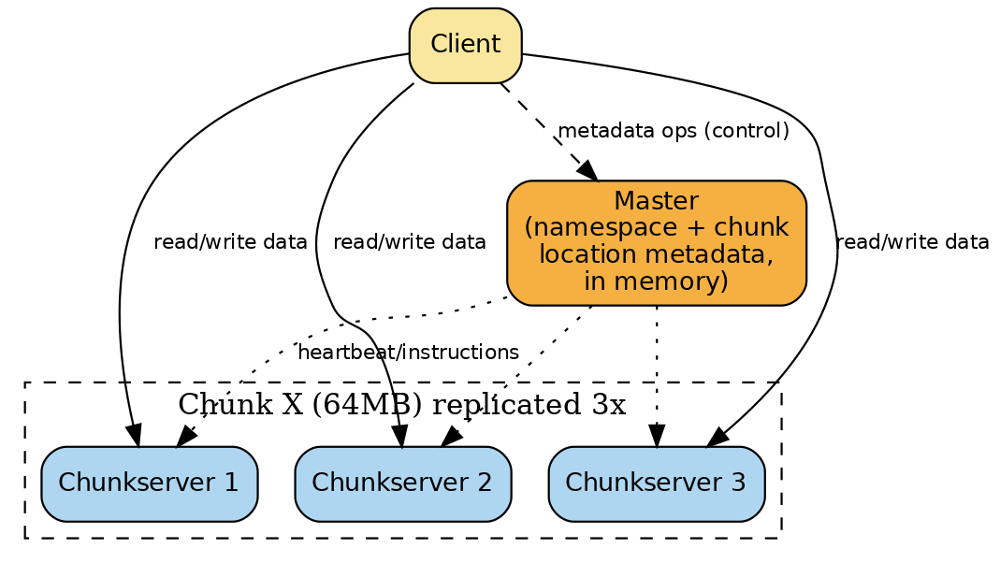
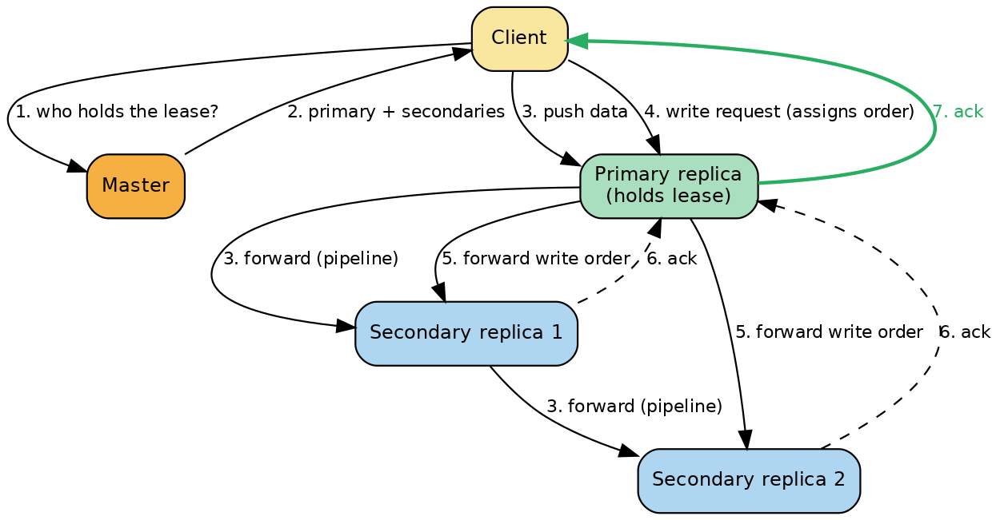

Google File System (GFS)
A system-design deep dive and interview study guide: internal architecture first, then math, diagrams, real-world usage, trade-offs, and follow-up interview questions.
Overview
The Google File System (GFS) is a proprietary, distributed file system Google built in the early 2000s to store and serve the enormous, fast-growing datasets behind its search and data-processing pipelines — files that are routinely multi-gigabyte, read mostly as long sequential streams, and mutated mostly by appending rather than overwriting. Google built it instead of using an off-the-shelf file system because none of the existing systems were designed around Google's actual operating conditions: it runs on thousands of cheap, unreliable "commodity" (off-the-shelf, not specialized) Linux machines where disk, memory, network, and even whole-machine failures are a routine, daily occurrence rather than a rare exception, and where hundreds of client processes need to append to the same file concurrently without an expensive locking protocol. Rather than retrofitting POSIX (Portable Operating System Interface — the standard Unix file API) semantics onto this environment, Google co-designed the file system API with its applications and relaxed the consistency guarantees just enough to make the system radically simpler, cheaper, and faster at Google's scale. We'll go straight into how it actually works internally, then zoom back out to the end-to-end system view.
Internal Architecture Deep Dive
2.1 Single-master architecture
A GFS cluster has exactly one master process, plus many chunkservers (the machines that actually hold file data on local disk), and is used by many clients (library code linked into applications — not a separate process the application talks to over a generic protocol).
What the master keeps in memory:
- The file namespace — a lookup table mapping full pathnames to metadata (not a per-directory listing like a Unix inode tree; GFS has no hard/symbolic links). It is compactly represented using prefix compression (shared path prefixes are stored once).
- The file-to-chunk mapping — for each file, the ordered list of 64-bit chunk handles that make up the file.
- The current locations of each chunk's replicas — which chunkservers hold a copy of each chunk.
- Ancillary bookkeeping: access-control info, each chunk's version number (Section 2.7), and a reference count per chunk (used for copy-on-write snapshots).
Item 3 (chunk locations) is deliberately never persisted to disk. Everything else (namespace + file-to-chunk mapping) is made durable by appending every mutation to an operation log on local disk, replicated synchronously to remote machines, with periodic checkpoints (a compact, B-tree-like on-disk structure that can be mapped straight into memory) so that recovery only has to replay a small tail of the log instead of the whole history.

Why a single master is safe here — the design reasoning:
- Keeping all metadata in memory makes master operations (answering "where is this chunk?") extremely fast, and lets the master cheaply run periodic full-state scans in the background for garbage collection, re-replication, and load rebalancing.
- The single master never sits on the data path. Clients ask the master once for chunk locations, cache the answer, and then read/write bytes directly against chunkservers. This decouples the (cheap, rare) metadata/control traffic from the (expensive, frequent) data traffic, so the master's single-threaded nature doesn't become an aggregate bandwidth bottleneck — it only has to keep up with metadata operation rate, not byte throughput. In real Google clusters measured in the paper, the master handled only 200–500 operations/second, which it did "easily," and was not a bottleneck.
- Having one master with global knowledge of the whole cluster lets it make much smarter chunk-placement and replication decisions than a negotiated multi-master or peer-to-peer scheme would allow (e.g., balancing disk usage, respecting rack topology, throttling clone traffic cluster-wide).
- The danger of a single master — it's a single point of failure and a serialization point for metadata mutations — is mitigated three ways:
- Operation log replication: a mutation is only considered "committed" after its log record is flushed to disk both locally and on remote master replicas, so no committed metadata change is lost if the master's machine dies.
- Fast restart: the master is designed to rebuild its full in-memory state (by replaying the last checkpoint + log tail, then re-polling every chunkserver for chunk locations) and start serving again within seconds to tens of seconds. Real measurements: individual servers had only 50–100 MB of metadata, so loading it from disk took a few seconds, though the master was "somewhat hobbled" for roughly 30–60 seconds while it re-collected chunk-location reports from all chunkservers.
- Automatic failover: if the master's machine or disk fails outright, monitoring infrastructure outside GFS starts a brand-new master process on another machine, loads the replicated operation log, and clients simply keep using the DNS (Domain Name System) alias name of the master (e.g.
gfs-test), which gets repointed — clients don't need to be reconfigured. - Shadow masters: one or more secondary master processes tail the same replicated operation log and apply the identical sequence of state changes as the primary, so they mirror its state with a lag of typically "fractions of a second." They serve read-only metadata requests (directory listings, file attributes) even while the primary is down or busy, improving read availability. They are explicitly called shadows, not mirrors/replicas of authority — they can't grant leases or make placement decisions, and applications may see slightly stale metadata (e.g., a just-created file might not show up yet), though actual file content is never stale because content is always read straight from chunkservers, not through any master.
2.2 Chunkservers and chunks: why 64 MB?
Files are split into fixed-size chunks, each named by a globally unique, immutable 64-bit chunk handle assigned by the master at creation time. Each chunkserver stores its chunks as ordinary Linux files, extended lazily (space is only allocated as data is actually written, avoiding wasted space from internal fragmentation — the biggest objection to picking a large chunk size).
GFS picked a chunk size of 64 MB (much larger than a typical file system's 4 KB block). The paper gives three concrete engineering reasons, and all three come down to keeping the master — the single scarce shared resource — cheap and out of the way:
- Fewer client–master round trips. Because a chunk is large, a client that is streaming through a file performs many read/write operations against the same chunk before it ever needs to ask the master again for a new chunk's location. For a client scanning a multi-terabyte working set sequentially, this is a huge reduction in master traffic; the client can even cache all the chunk locations for the whole working set in memory.
- Fewer, longer-lived TCP (Transmission Control Protocol) connections. Because a client does many operations against the same chunk, it can keep a persistent TCP connection open to that chunkserver for an extended period instead of paying connection setup/teardown overhead per operation.
- Smaller metadata table on the master. Fewer, bigger chunks means fewer chunk-metadata entries the master has to track, which is what allows the master to keep 100% of its metadata resident in RAM.
The actual metadata math (from the paper): the master keeps less than 64 bytes of metadata per 64 MB chunk, and less than 64 bytes per file name (thanks to prefix compression of the namespace). That is a metadata-to-data ratio on the order of 1 : 1,000,000 (64 bytes describing 67,108,864 bytes of actual data) — which is exactly why the master's memory was never, in practice, the limiting factor on how much data a GFS cluster could hold. (Section 4 works this arithmetic out fully for multi-petabyte clusters.)
The trade-off / downside: a small file — even a single 64 MB chunk — concentrates all of that file's traffic onto the few chunkservers holding it, creating a hot spot if many clients read it at once. Google actually hit this in production: a batch-queue system wrote an executable binary to GFS as a single chunk and then started it on hundreds of machines simultaneously, hammering the few chunkservers holding that one chunk. The fix was operational, not architectural: raise the replication factor for such files and stagger job start times.
2.3 Replication and placement policy
By default, GFS stores three replicas of every chunk (this is user/directory-configurable — some data can be stored unreplicated, other data at a higher factor). Replica placement has two explicit goals: maximize reliability/availability and maximize aggregate network bandwidth utilization. Both goals push toward spreading replicas across machine racks, not merely across machines on the same rack:
- Spreading only across machines protects against a single disk or single machine dying, and lets each machine's outbound network link be used, but a whole-rack outage (a bad top-of-rack switch or a shared power circuit) would still take out every replica if they all lived in that rack.
- Spreading across racks means a chunk survives even if an entire rack goes offline, and lets reads of a popular chunk pull from the aggregate bandwidth of multiple racks' uplinks simultaneously.
- The conscious cost accepted in exchange: write traffic must now cross inter-rack links (which have less aggregate bandwidth than intra-rack links) — "a tradeoff we make willingly," per the paper.
New replicas are created for three distinct reasons, each with its own placement heuristic drawing on the master's global view: (1) chunk creation — prefer chunkservers with below-average disk utilization, cap the number of "recent creations" per chunkserver (a leading indicator of imminent heavy write traffic), and spread across racks; (2) re-replication, triggered as soon as the live-replica count for a chunk falls below the target (chunkserver died, disk failed, corruption detected, or the replication goal itself was raised) — chunks are prioritized by how far below target they are, live files before recently-deleted ones, and anything actively blocking a running client is boosted to the front; (3) rebalancing, a periodic background pass that shifts replicas to smooth out disk usage and gently fill up newly added chunkservers rather than flooding them with writes on day one.
2.4 Leases and mutation order — the core write protocol
Because every mutation (a write or an append) must be applied to all replicas of a chunk, GFS needs a way to guarantee all replicas apply concurrent mutations in the same order — otherwise replicas would diverge. GFS solves this with leases, not with a lock service or consensus protocol on every write:
- The master grants a time-bounded lease for a chunk to one of its replicas, designated the primary.
- The primary — and only the primary — picks the serial (numeric) order in which it will apply all mutations submitted to that chunk (possibly from many different clients at once), and every secondary replica is required to apply mutations in that exact same order.
- So the global mutation order for a chunk is defined two-level: first by the order in which the master hands out leases over time, and second, within a given lease, by the serial numbers the primary itself assigns.
- Lease duration: an initial timeout of 60 seconds. As long as the chunk is actively being mutated, the primary keeps renewing the lease by piggy-backing extension requests on the routine HeartBeat messages it already exchanges with the master — so a hot chunk's lease can effectively live for minutes or hours uninterrupted, at essentially zero extra message cost. If the master loses contact with a primary, it simply waits out the remaining lease timeout and then is free to grant the lease to a different, reachable replica — no need for an explicit "step down" handshake.

Full step-by-step numbered write data flow (this mirrors Figure 2 of the original paper precisely — it is the single most important diagram in the whole system):
- Client → Master: the client asks the master which chunkserver currently holds the lease for the target chunk, and the locations of the other (secondary) replicas. If nobody currently holds a lease, the master grants one (to a replica of its choosing) as a side effect of answering this request.
- Master → Client: the master replies with the identity of the primary and the locations of the secondary replicas, plus the chunk's version number. The client caches this for future mutations to the same chunk and will not need to ask the master again unless the primary becomes unreachable or reports that it no longer holds the lease.
- Client → all replicas (data push, not yet a write): the client pushes the actual mutation data to every replica (primary and secondaries alike), in whatever order is most efficient — this is pure data-plane traffic and does not yet touch the master at all. Each chunkserver just stores the pushed bytes in an internal LRU (Least Recently Used) buffer cache until the data is either used or ages out. Crucially, this step is pipelined across chunkservers rather than being a client-to-N fan-out (see Section 3.2 on data flow) — this is the "decoupling control flow from data flow" idea.
- Client → Primary (write request): once the client has confirmation that all replicas received the pushed data, it sends a write request to the primary identifying exactly which previously-pushed data to apply. The primary assigns the next consecutive serial number to this mutation (serializing it against any other concurrent mutations it may be receiving from other clients) and applies it to its own local replica in that serial order.
- Primary → Secondaries (forward): the primary forwards the same write request — including the serial number it chose — to every secondary replica, which must apply the mutation in that identical order.
- Secondaries → Primary (ack): each secondary replies to the primary once it has finished applying the mutation locally.
- Primary → Client (final reply): the primary replies to the client with success, or with any errors reported by any replica. If a secondary failed the write, the client is told the operation failed and the affected file region is left in an inconsistent state (see the consistency model, Section 2.6) — note it may have still succeeded at the primary and some subset of secondaries, since if it had failed at the primary it would never have been serialized and forwarded at all. GFS client library code retries steps (3)–(7) a few times before giving up and retrying the entire write from scratch.
If an application's write is large or straddles a chunk boundary, the client library silently breaks it into multiple such write operations that each go through this same 7-step control flow — which is exactly how interleaved writes from different concurrent clients can end up mixed together in one shared file region (still byte-identical across replicas, just "consistent but undefined" — see 2.6).
2.5 Atomic record append — and the padding/duplicate hazard
A record append is GFS's answer to "many producers need to append to one shared file with no external locking." It follows almost the same control flow as a regular write (Section 2.4) with one key twist: the client does not specify an offset — it only supplies the data (the "record") — and GFS itself atomically appends that record at least once, at an offset GFS chooses, then hands that offset back to the caller. This is like opening a Unix file with O_APPEND (append-only mode), but race-free even when hundreds of clients on different machines append concurrently — no distributed lock manager required.
The extra logic lives entirely at the primary, inserted between write-flow steps 4 and 5:
- The client pushes the record's bytes to all replicas of the file's last chunk (step 3, unchanged).
- The primary checks whether appending this record would push the chunk past the 64 MB maximum chunk size. If so, it pads the current chunk out to the full 64 MB on every replica, tells the client to retry the append on the next chunk, and the client transparently does so. (To bound the worst-case wasted padding, GFS restricts a single record-append payload to at most one-fourth of the max chunk size, i.e., 16 MB.)
- Otherwise (the common case), the primary appends the record to its own replica at whatever offset is now the current end of chunk, tells every secondary to write the same bytes at that exact same offset, and only then reports success back to the client.
Why duplicates and "poison" padding can appear: if the append fails at any replica (e.g., a secondary times out), the client simply retries the whole append operation. Because the primary always appends at "whatever the current end of the chunk is" independently on each retry, a retry can leave: (a) a duplicate of the record fully or partially written on the replicas where the first attempt actually succeeded, and (b) a gap of unwritten/inconsistent padding bytes on replicas where the first attempt failed but a later retry landed at a higher offset. GFS explicitly does not guarantee that replicas of a chunk are byte-for-byte identical — its only guarantee is that the data was written at least once, as one atomic, non-interleaved unit, somewhere at or beyond the previous end of the chunk. This is safe from a correctness standpoint (later appends are always assigned an offset at or beyond the true end-of-record, even if the primary role later moves to a different replica), but it pushes the burden of "is this data real, and have I seen it before?" onto the reader. GFS's answer, adopted as a convention by its applications: writers prepend each record with self-validating information — a checksum (and often a "magic number") so a reader can recognize and skip over padding/partial garbage, and writers embed a unique application-level ID in each record so a reader that cannot tolerate duplicates (e.g., because reprocessing one would not be idempotent) can filter them out itself. GFS's shared client library implements the padding/checksum-validation part for every application; de-duplication by unique ID is left to each application because only the application knows what "a duplicate" means for its data.
2.6 Consistency model: "consistent" vs. "defined"
GFS defines two distinct, deliberately weaker-than-usual terms for describing the state of a file region after mutation(s):
- Consistent: all clients will see the same data, no matter which replica they happen to read from.
- Defined: the region is consistent and clients see the complete effect of the mutation that wrote it, with nothing mixed in from any other mutation.
| Mutation type | Serial success (one writer, no concurrency) | Concurrent successes (multiple writers, all succeed) | Any failure |
|---|---|---|---|
| Write (client-specified offset) | defined | consistent but undefined | inconsistent |
| Record append | defined | defined interspersed with inconsistent regions (padding/duplicates) | inconsistent |
Worked example of "consistent but undefined": suppose two clients, A and B, each issue a regular write() to the exact same 200-byte region of a chunk at the same time, and both writes fully succeed (both got acknowledged through steps 1–7 above with no errors). GFS guarantees the primary applied them in some serial order and every replica applied them in that same order — so if you read that 200-byte region from replica 1 or replica 3, you get byte-for-byte the same answer either way (that's consistency). But because the two writes overlapped in the same byte range, the winning bytes on disk are some interleaving of fragments from A's write and B's write — perhaps the first 80 bytes came from A, then B's write (which finished its network trip slightly later in this interleaving) overwrote bytes 80–150, then the tail is A's again. No single client's data was written "in its entirety" — that's why it's undefined, even though every reader sees the identical mixed result. Applications avoid ever depending on this case by preferring record append (whose successfully-written regions are always defined, per the table) and by writing self-describing, checksummed records plus periodic checkpoints so that readers only trust file regions up to the last known-good checkpoint.
How GFS actually achieves "defined after a sequence of successful mutations": two mechanisms working together — (a) applying mutations to every replica of a chunk in the identical order (the lease/primary mechanism of 2.4), and (b) chunk version numbers (2.7) to make sure a replica that missed some mutations while its chunkserver was offline is never again treated as up to date.
2.7 Stale replica detection: chunk version numbers
A chunkserver that is down (rebooting, network-partitioned, disk hiccup) will miss any mutation the master and the other replicas process in the meantime — leaving it with a stale replica once it comes back. GFS's fix is a monotonically increasing chunk version number, one per chunk, tracked by the master:
- Every time the master grants a new lease on a chunk, it first bumps that chunk's version number and pushes the new number out to all replicas it currently believes are up to date — and it does this before any client is even told who the new primary is, so no client can start writing under a stale version number.
- A replica that was unreachable at that moment never receives the bump, so its on-disk version number is left behind.
- When that chunkserver eventually restarts, it reports its full inventory of chunks and their version numbers back to the master. Any chunk reported with a version number lower than what the master has on record is immediately recognized as stale.
- Stale replicas are simply treated by the master as if they don't exist: they are never handed out to clients asking for chunk locations, and never participate in future mutations. They get physically deleted during the next regular garbage-collection pass. As an extra safety net, the master also stamps the chunk version number onto every location/lease response and clone instruction it sends out, and the receiving client/chunkserver independently double-checks the version number before trusting the data — belt-and-suspenders protection against ever silently reading or cloning from a stale copy.
- Because most GFS files are append-only, in practice a client that does briefly read a stale replica (before its cached location info expires) usually just observes a premature end-of-chunk rather than actually-wrong data, and a retry against the master immediately yields current locations.
2.8 Garbage collection (lazy deletion)
GFS deliberately does not reclaim disk space the instant a file is deleted. Instead:
- The application's
deleteis logged immediately (so the operation is durable right away), but the file is simply renamed to a hidden name embedding the deletion timestamp, rather than having its chunks unlinked. - During its regular background scan of the namespace, the master permanently erases any such hidden file once it has sat there longer than a configurable interval — three days by default. Until that window elapses, the "deleted" file can still be read under its hidden name, or trivially undeleted by renaming it back.
- Once the hidden file is actually erased from the namespace, its in-memory metadata (and therefore its links to its chunks) disappear — but the chunk data itself is still sitting on chunkservers at this point.
- Separately, in a regular scan of chunk metadata, the master identifies orphaned chunks — chunks no file references any more — and drops their metadata too. Chunkservers periodically report a subset of the chunks they're holding in their HeartBeat message, and the master's reply tells each one which of its reported chunks are no longer known to the master at all; the chunkserver is then free to physically delete those local files whenever it likes.
Why lazy/background deletion instead of eager, synchronous deletion? Three stated reasons: (1) it's simple and uniform in a system where component failures are the norm — chunk creation can partially succeed on some replicas but not others, and delete-replica RPCs (Remote Procedure Calls) can be silently lost, so eager deletion would need fragile retry/reconciliation bookkeeping, whereas "anything not referenced eventually gets swept" requires none; (2) it amortizes the cost into the master's existing periodic background scans and chunkserver handshakes, done only when the master is relatively idle, rather than adding synchronous work to the deletion request's critical path; (3) it acts as a safety net against accidental, irreversible deletion for a few days. The acknowledged downside: applications that rapidly create-and-delete lots of temporary files can't immediately reclaim that space — mitigated by letting a repeat/explicit delete expedite reclamation, and by letting different parts of the namespace opt into more aggressive (even immediate/irrevocable) reclamation policies.
2.9 Fault tolerance: fast recovery and checksumming
GFS keeps the overall system highly available with two simple strategies layered on top of everything above:
- Fast recovery: both the master and every chunkserver are engineered to rebuild their state and resume serving within seconds, regardless of how they went down — GFS makes no distinction between a clean shutdown and simply
kill -9ing the process; that's routine practice, not an emergency path. Clients and other servers just see a brief request timeout, reconnect, and retry. - Replication: covered above (default 3x, rack-aware). Beyond straight replication, the paper notes Google was already exploring parity/erasure coding for read-mostly data — a path later realized in Colossus (Section 7).
Per-block checksumming for corruption detection: because a GFS cluster has thousands of disks across hundreds of machines, silent disk-level corruption is a routine occurrence, not a hypothetical. Rather than the expensive, and semantically unsound, approach of comparing bytes across replicas (recall: replicas are allowed to diverge slightly due to record-append semantics, so a byte-for-byte mismatch across replicas wouldn't even reliably indicate corruption), each chunkserver independently verifies its own copy using checksums:
- Every chunk is broken into 64 KB blocks, each with its own 32-bit checksum, held in memory and made durable via the same logging mechanism as other chunkserver metadata (kept separately from the actual user data bytes).
- On every read, the chunkserver checks the checksum of every 64 KB block overlapping the requested byte range before returning any bytes — so a chunkserver can never propagate corrupted data onward to a client or to another chunkserver. A mismatch triggers an error back to the requester (who then retries against a different replica) and a corruption report to the master, which clones a fresh replica from a known-good copy and then tells the corrupt chunkserver to delete its bad one.
- Checksumming is nearly free on reads because most reads already span multiple blocks (so the extra bytes checksummed are a small fraction of the read), the checksum lookup/compare needs no extra disk I/O (Input/Output), and checksum computation overlaps with I/O.
- Writes are optimized around the dominant workload (append, not overwrite): appending to the end of a chunk only requires incrementally updating the checksum of the last (partial) block and computing fresh checksums for any newly-filled blocks — cheap. Overwriting an existing byte range is more expensive and more careful: GFS must first read and verify the checksums of the first and last block touched by the overwrite (otherwise a new checksum computed over stale/corrupt-but-unverified bytes could permanently mask existing corruption), then perform the write, then recompute.
- During otherwise-idle periods, chunkservers proactively scan and verify rarely-read chunks in the background, so silent corruption in cold data still eventually surfaces (instead of only being caught the next time an application happens to read it) and the master can re-replicate before that copy is the last good one left.
System Design View: End-to-End Read and Write Walkthroughs
3.1 Read path (numbered)
- The client library, given a
(filename, byte offset)from the application, uses the fixed chunk size to compute a chunk index within the file. - The client sends the master a request:
(filename, chunk index). - The master replies with the corresponding chunk handle and the locations of all its replicas (and, opportunistically, the same info for several subsequent chunks too — "sidesteps several future client-master interactions at practically no extra cost").
- The client caches this
(filename, chunk index) → (handle, locations)mapping (keyed by filename + chunk index) for a limited time. - The client picks one replica — normally the closest one — and sends it a request:
(chunk handle, byte range). - That chunkserver validates the requested byte range's 64 KB checksum blocks (Section 2.9) and returns the requested bytes directly to the client — the master is never touched again for this or subsequent reads of the same chunk, until the cache entry expires or the file is reopened (reopening purges all cached chunk info for that file, guaranteeing a fresh read after any reopen even if a stale replica had briefly been in play).
3.2 Write path (numbered, with pipelined data flow across chunkservers)
This is the same 7-step control flow already detailed in Section 2.4, restated here from the "system design" lens with emphasis on how the data plane (bytes) is deliberately routed differently from the control plane (RPCs about who-does-what):
- Client asks master for the primary + secondary locations of the target chunk (master grants a lease first, if none currently exists).
- Master replies with primary identity + secondary locations + chunk version; client caches it.
- Data push (pipelined, decoupled from control): the client sends the mutation's raw bytes toward the chunkservers, but not as a client → each-replica star/fan-out. Instead, the bytes flow linearly down a chain: the client sends to whichever replica is topologically closest to it (say S1); S1 immediately begins forwarding the same bytes onward — before it's even finished receiving all of them — to whichever remaining replica is closest to S1 (say S2); S2 does the same toward S3; and so on. Because GFS's network topology is simple enough to estimate "distance" directly from IP address, this greedy nearest-neighbor chaining reliably avoids inter-switch/high-latency hops and, because the data is pipelined over full-duplex switched links, every machine's entire inbound and outbound bandwidth is being used simultaneously in each direction — sending doesn't reduce the receive rate. Every chunkserver simply buffers the pushed bytes in an LRU cache; nothing is applied to the actual chunk file yet.
- Once the client has confirmation all replicas have the data buffered, it sends the write request to the primary only (control-plane message, tiny compared to the data already pushed). The primary assigns a serial number and applies the mutation to its own on-disk replica.
- The primary forwards the write request (with its chosen serial number) to the secondaries.
- Secondaries apply it in that order and ack the primary.
- The primary replies to the client with success or the specific error(s) encountered.
Why decouple data flow from control flow at all? Two independent wins: (a) the expensive part — moving potentially megabytes of payload — gets scheduled purely based on network topology (nearest-neighbor chaining) regardless of which node happens to hold the write lease, fully saturating link bandwidth; (b) the cheap part — deciding serialization order — stays centralized at exactly one node (the primary) per chunk, which is exactly what's needed for correctness (Section 2.4) and nothing more. Bandwidth-heavy and latency/ordering-sensitive concerns are optimized independently instead of being bottlenecked by whichever single node happens to be "in charge."
The Math: Deriving GFS's Numbers
4.1 Metadata size per chunk, and total master memory for X petabytes
The paper states the master keeps < 64 bytes of metadata per 64 MB chunk, and separately < 64 bytes per file name (via prefix compression of the namespace). Note: this per-chunk metadata figure already covers the chunk's replica locations, version number, etc. — it is not multiplied by the replication factor, because the master describes each chunk once, not each replica.
Master memory for chunk metadata ≈ 14,901,161 × 64 bytes ≈ 953.7 MB ≈ ~1 GB
Rule of thumb: roughly 1 GB of master RAM per petabyte of logical data, at 64 MB chunks and the paper's <64-byte-per-chunk budget.
Master memory for chunk metadata ≈ 149,011,612 × 64 bytes ≈ 9,536,743,168 bytes ≈ ~9.5 GB
Add namespace metadata: if the average file is 250 MB, that's 1016/(250×106) = 40 million files × <64 bytes ≈ <2.4 GB more. Total master memory: comfortably under 15 GB for 10 PB of logical data — trivial for a single large-memory server.
Cross-checking against the paper's real measured clusters (Table 2 in the paper): Cluster A had ~992,000 chunks and ~735,000 files, and its actual total master metadata was 48 MB; Cluster B had ~1,550,000 chunks / 737,000 files and 60 MB of master metadata. A naive upper-bound calc (992,000 × 64 bytes ≈ 63.5 MB) is already in the right ballpark and slightly conservative versus the true 48 MB — consistent with the paper's own framing of "<64 bytes" as a worst-case bound, with real average overhead somewhat lower thanks to prefix compression and mostly-full chunks. The paper separately reports this works out to roughly 100 bytes of master metadata per file on average across both namespace and chunk bookkeeping combined.
4.2 Checksum block size and storage overhead
Each chunk is divided into 64 KB (65,536-byte) blocks, each protected by a 32-bit (4-byte) checksum.
Checksum bytes per chunk = 1,024 × 4 bytes = 4,096 bytes (4 KB) of checksum data per 64 MB chunk
Overhead ratio = 4 bytes ÷ 65,536 bytes = 1/16,384 ≈ 0.0061% of stored data — i.e., roughly 64 KB of checksum data per 1 GB stored
Cross-check against real measured chunkserver metadata (Table 2): Cluster A stored 13 GB of chunkserver-side metadata (mostly these checksums, plus each chunk's version number) against 55 TB of used disk space, i.e. ≈ 0.024% overhead; Cluster B: 21 GB against 155 TB ≈ 0.0135%. Both real-world ratios are a few times higher than the theoretical pure-checksum ratio of 0.0061% — consistent with the paper's own note that chunkserver metadata is "mostly the checksums... [and] also the chunk version number," i.e., there's a bit of additional per-chunk bookkeeping layered on top of the raw checksum bytes, but the order of magnitude matches: checksum/metadata overhead at the chunkserver is a tiny fraction of a percent of raw stored bytes.
4.3 Lease timeout duration
The primary piggybacks lease-extension requests on its regular HeartBeat exchanges with the master (these HeartBeats happen anyway, for chunkserver health monitoring and instruction delivery, so lease renewal for a hot chunk is essentially "free" — no dedicated messages). The 60-second figure is small enough that the master reliably regains control of a chunk's mutation ordering within a bounded, short window after losing contact with a primary (e.g., a crashed chunkserver), without needing an explicit handshake to release the lease.
4.4 Replication overhead: raw storage vs. logical storage
Worked example: 5 PB of logical data → 15 PB of raw disk actually provisioned across chunkservers
Paper's real clusters: Cluster A stored 55 TB of "used disk space" (includes all chunk replicas) to hold 18 TB of actual file data (55/3 ≈ 18.3 TB); Cluster B: 155 TB used to hold ~52 TB of file data (155/3 ≈ 51.7 TB)
This 3x multiplier is the single biggest cost driver of the GFS design and is exactly the line item Colossus later attacked by layering in erasure coding for colder data (Section 7).
4.5 Throughput math for pipelined replication
The paper gives a clean closed-form estimate for how long it ideally takes to push B bytes of write data out to R replicas over the pipelined chain described in Section 3.2, assuming no network congestion:
where T is per-link network throughput and L is the one-hop latency between two machines.
Worked example — 1 MB write to 3 replicas over 100 Mbps (≈12.5 MB/s) links with L < 1 ms: B/T = (1 MB)/(12.5 MB/s) ≈ 80 ms; R·L = 3×(<1 ms) ≈ negligible. Total ≈ ~80 ms, matching the paper's own statement: "1 MB can ideally be distributed in about 80 ms."
Worked example: 16 chunkservers × 12.5 MB/s (100 Mbps) inbound each = 200 MB/s total inbound capacity ÷ 3 (replication factor) ≈ 67 MB/s — exactly the "67 MB/s" plateau the paper reports as the theoretical write-throughput limit for its 16-chunkserver test cluster.
Measured aggregate write throughput topped out lower still, around 35 MB/s at 16 concurrent clients, roughly half the theoretical ceiling — attributed in the paper to the network stack interacting poorly with the pipelining scheme and to increasing collision probability as more clients write concurrently to the same chunkservers.
By contrast, reads don't pay the replication-factor tax (a read only pulls from one replica), so the aggregate read ceiling in that same test cluster was governed purely by the 1 Gbps inter-switch link — 125 MB/s — and measured throughput reached 94 MB/s (~75% efficiency) at 16 concurrent readers.
CAP Theorem Placement and Consistency Trade-offs
The CAP theorem (Consistency, Availability, Partition tolerance — you can only fully guarantee two of the three simultaneously during an actual network partition) is a useful lens, though GFS predates the theorem's popularization and is really a single-datacenter, rack-partition-tolerant system rather than a globally partition-tolerant one.
Partition tolerance (P): GFS assumes and is engineered around frequent partial failures — individual machine, disk, and even rack-level outages are explicitly "the norm, not the exception." It tolerates these at the chunk level via replication and rack-aware placement, and at the metadata level via operation-log replication + shadow masters + automatic master failover.
Availability (A): GFS strongly favors availability for reads — reads can be served by any up-to-date replica, and even metadata reads keep working (read-only, via shadow masters) if the primary master is unreachable. Writes are more availability-constrained: a chunk cannot accept mutations while its lease/primary is being re-established (bounded by the 60-second lease timeout), and all namespace-mutating operations funnel through the single master.
Consistency (C): GFS deliberately does not offer strict, POSIX-like single-copy consistency. Its "consistent-but-undefined" and "at-least-once" record-append semantics are explicit, documented weakenings of consistency, traded away specifically to buy simplicity and availability/throughput. In CAP terms, GFS sits closer to AP (favor availability, accept a relaxed/weak consistency model) for the data path, while the metadata path (namespace mutations through the single master, serialized by the operation log) behaves more like a CP system — strongly consistent, but the master (even with fast failover) is a temporary availability bottleneck for metadata mutations during its own recovery window.
The broader lesson GFS teaches for system-design interviews: consistency is not all-or-nothing. GFS ships two different consistency guarantees for two different operations (write vs. record append) precisely because its applications were co-designed to tolerate the weaker one (record append) in exchange for lock-free concurrent multi-writer throughput, while still using full "defined" writes/checkpointing wherever an application genuinely needs stronger guarantees.
Real-World Legacy: HDFS and Colossus
7.1 HDFS (Hadoop Distributed File System)
HDFS, the storage layer of the open-source Apache Hadoop project, is directly and explicitly modeled on GFS — to the point that the architectural components map almost one-to-one: GFS's master ↔ HDFS's NameNode; GFS's chunkserver ↔ HDFS's DataNode; GFS's chunk ↔ HDFS's block. Both use a single master/NameNode holding all metadata in memory, both use periodic heartbeats plus block reports from DataNodes to let the NameNode reconstruct block locations (mirroring GFS's decision never to persist chunk locations on the master), and both default to a large block size to keep per-block metadata small and reduce master/NameNode round trips — HDFS originally defaulted to 64 MB blocks (matching GFS exactly) before later Hadoop versions raised the default to 128 MB (and many production deployments now use 256 MB or larger) as disks and networks got faster and workloads got bigger. Key divergences: HDFS was built as a general-purpose, open-source substrate for many different organizations' Hadoop/MapReduce-style batch jobs rather than being co-designed with one company's specific application suite, so it is somewhat less aggressively tuned to any one workload than GFS was to Google's; and HDFS historically lacked GFS's atomic record append primitive in its original form (its append support was added and evolved separately over time).
7.2 Evolution into Colossus
Google eventually retired GFS internally in favor of a successor system code-named Colossus. The public information (Google Cloud blog posts, engineer talks — Colossus itself has never had a full academic paper published the way GFS did) describes a system that fixes GFS's most-cited scaling limits:
- Metadata is no longer held by one single master. Colossus splits the master's responsibilities into two roles: curators, which handle interactive metadata control operations (create/delete/lookup) and are horizontally scaled out (not a single process) by storing metadata in Bigtable (Google's distributed structured-storage system) instead of one process's RAM; and custodians, background processes that manage durability/availability tasks like re-replication and disk-space balancing (Colossus's analogue of GFS's background garbage collection/rebalancing scans, but decoupled from the interactive metadata path entirely).
- Storage nodes got simpler, sometimes called "D servers" in public descriptions — minimal, mostly-dumb disk-serving daemons, with intelligence pushed up into curators/custodians and out to clients.
- Replication overhead is reduced for colder data using Reed-Solomon erasure coding rather than always paying a flat 3x replication cost — directly addressing the "3x raw storage" cost driver worked out in Section 4.4, at the price of more compute-intensive encode/decode/repair operations, which is a trade Google's scale can absorb.
- Colossus underpins later Google infrastructure that needs a shared, scalable storage substrate — most notably it is the storage layer beneath Spanner, Google's globally distributed database.
The throughline from GFS to Colossus is a case study in a recurring distributed-systems lesson: a single-master design bought Google enormous simplicity and speed at the multi-hundred-terabyte/single-digit-petabyte scale of 2003, and the same design's core scaling knob — "just give the master more RAM" — eventually ran out of headroom as Google's storage needs grew past the point where sharded, horizontally-scalable metadata (curators over Bigtable) became necessary.
Trade-offs and Limitations
- Small-file overhead / hot-spotting. A 64 MB chunk size is fantastic for huge, sequentially-accessed files, but a filesystem full of many small files wastes relatively more master metadata per byte of actual data and — worse — can create hot spots when many clients read the same small (single-chunk) file at once, exactly as happened with the batch-queued single-chunk executable described in Section 2.2. GFS was never optimized for a "many small files" workload, and explicitly says so.
- Single master remains a bottleneck for metadata-heavy operations, even though it's not a bottleneck for data bandwidth. Namespace-wide scans (
FindMatchingFiles, i.e.,ls-style pattern matching) can be expensive because they may touch a large part of the namespace, and all mutating namespace operations (creates, deletes, renames, snapshots) are still serialized through one process's operation log — an early version of GFS actually did hit a real master bottleneck from linear directory scans, fixed by moving to binary-searchable master data structures. This single-writer-for-metadata-mutations property is exactly what Colossus's curator sharding was built to remove. - Not well suited to low-latency, small, random writes. GFS's entire design — 64 MB chunks, a lease/primary hand-off adding at least one extra round trip before a write is even acknowledged, checksums verified/rewritten around partial-block overwrites, high-sustained-bandwidth-over-low-latency prioritization — trades away single-operation latency for aggregate throughput at scale. An application needing many small, low-latency, randomly-placed writes (e.g., an OLTP-style database workload the way a traditional RDBMS needs) is fighting GFS's grain the whole way; Google itself built separate systems (e.g., Bigtable, and later Spanner) on top of GFS/Colossus rather than using GFS's own semantics directly for that class of workload.
- Relaxed consistency pushes correctness work onto applications. "Consistent but undefined" regions and at-least-once record append with possible duplicates/padding are not free lunches — every application built on GFS has to be deliberately written to tolerate them (checksummed self-describing records, unique IDs for de-duplication, checkpoint-based readers). This is a fine trade when you also control every application (as Google did), and a much harder sell as a general-purpose file system for arbitrary POSIX-expecting software — which is part of why GFS never tried to expose a POSIX interface at all.
- No POSIX semantics, no hard/symbolic links, no per-directory listing structure — deliberate simplifications that make GFS a poor fit as a drop-in replacement for a general Unix file system, by design.
Common Interview Questions
write() overlapping byte ranges of the same chunk; both writes succeed and get applied in the same serial order on every replica, so every replica ends up byte-identical (consistent). But because the writes overlapped, the final bytes are some interleaving of fragments from both clients' payloads rather than either write's data appearing whole (undefined) — no reader sees a torn/partial write, but no reader sees "the" result of a single write either.Key Takeaways
References
- Ghemawat, S., Gobioff, H., & Leung, S-T. (2003). "The Google File System" (Proceedings of the 19th ACM Symposium on Operating Systems Principles, SOSP '03 — primary source for essentially every technical claim above)
- Google Research publication page for the GFS paper
- Google Research archive index
- MIT 6.824 (Distributed Systems) — official GFS FAQ with author-adjacent commentary
- MIT 6.824 — GFS lecture notes (secondary explainer)
- Google Cloud Blog — "A peek behind Colossus, Google's file system"
- Google Cloud Blog — "How Colossus optimizes data placement for performance"
- SysTutorials — "Colossus: Google's Next-Generation Distributed File System"
- Wikipedia — "Google File System"
- High Scalability — "Google Architecture"
- Apache Hadoop official documentation — "HDFS Architecture Guide"